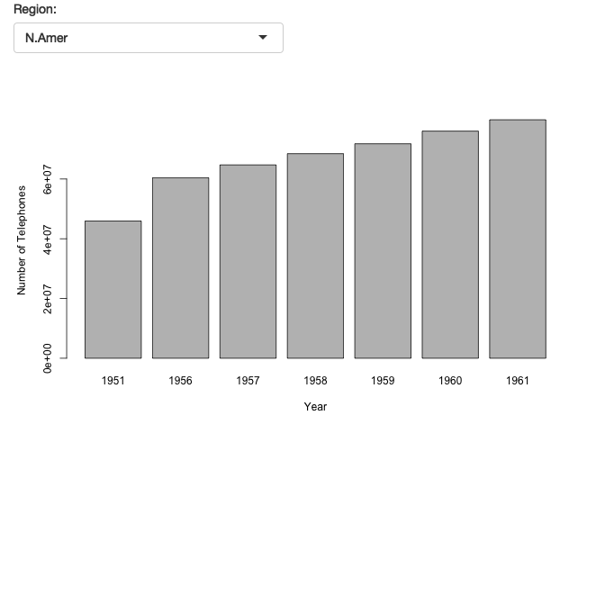

Building a Shiny App
Katriona Goldmann

Introduction
This vignette provides an example for deploying the interactive visualisations created in the volcano3D package as Shiny Apps.
The purpose if this is to generate a similar tool to the web page available at https://peac.hpc.qmul.ac.uk which supplements the results found in ‘Lewis, Myles J., et al. “Molecular portraits of early rheumatoid arthritis identify clinical and treatment response phenotypes.” Cell reports 28.9 (2019): 2455-2470.’ (DOI: 10.1016/j.celrep.2019.07.091) with an interactive web tool available at
Getting Started
Install Shiny
install.packages("shiny")Install volcano3D
Either from CRAN Not yet publicly available:
install.packages("volcano3D")or from Github
library(devtools)
install_github("KatrionaGoldmann/volcano3D")library(volcano3D)The sample data used in this vignette can be loaded from the volcano3Ddata package. This is only possible after volcano3D is imported.
install.packages("volcano3Ddata")Creating the shiny app
1. Describe how to create the shiny app in general - the general structure
Shiny is an R package that makes it easy to build interactive web applications straight from R.
Structure of a Shiny App
Shiny apps has three components:
a user interface object
a server function
a call to the shinyApp function
The user interface (ui) object controls the layout and appearance of your app. The server function contains the instructions that your computer needs to build your app. Finally the shinyApp function creates Shiny app objects from an explicit UI/server pair.
To find out more information about shiny, as well as tutorials and examples visit the shiny website.
Basic Example
Using the 1st example from the shiny website we can create a very basic shiny app. First building a ui:
library(shiny)
# Define UI for app that draws a histogram ----
ui <- fluidPage(
# App title ----
titlePanel("Hello Shiny!"),
# Sidebar layout with input and output definitions ----
sidebarLayout(
# Sidebar panel for inputs ----
sidebarPanel(
# Input: Slider for the number of bins ----
sliderInput("bins", label = "No. of bins:", min = 1, max = 50, value = 30)
),
# Main panel for displaying outputs ----
mainPanel(
# Output: Histogram ----
plotOutput(outputId = "distPlot")
)
)
)And then building a server:
server <- function(input, output) {
output$distPlot <- renderPlot({
x <- faithful$waiting
bins <- seq(min(x), max(x), length.out = input$bins + 1)
hist(x, breaks = bins, col = "#75AADB", border = "white",
xlab = "Waiting time to next eruption (in mins)",
main = "Histogram of waiting times")
})
}Then we can run the interactive app:
#shinyApp(ui = ui, server = server) ## 2. Describe the volcano3D tab (specific bit to this package)
3. Deploying shiny apps
- Docker - reference links
- server hpc - reference links